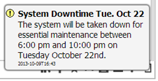

Sending Messages to Users
You can send messages (alerts) to other users, either to individuals or to all users.
There are two types of message:
- Information Messages. These pop up on a user's screen if the user is logged in to , then fade. The user can continue working while the message is on the screen.

also sends automatic information messages for report completion and task assignment.
- Warning Messages. These pop up on a user's screen if the user is logged in to ; the user must click the message to dismiss it. If the user is not logged in, the message is displayed next time they log in.
Warning messages can be set to expire after a given date and time. This means, for example, that if you send a message about system downtime, someone who misses the downtime because they are not even logged in will not be warned about it when they log in after it has happened.

The User Alerts tab on the user preferences screen for a user shows the alert history of Information and Warning messages for the user.
User Preferences Alert History Tab

To send an alert to one or more logged-in users:
- Go to Current Users.
- Select the users you want to send the message to.
- From the Choose Action list, select Send Message and click
 .
.
- Select the type of message (Information or Warning), and (optionally) enter a title.
- If the message is a Warning, and you want it to expire, enter the date and time.
- Type the text of the message. You can use the formatting buttons to enhance the appearance of the message.
- Click
 .
.
To send an alert to users, whether or not they are logged in:
- Go to Current Users.
- Click the SEND MESSAGE button (at the top right of the screen).Current Users Browse – Send Message

Message Input Screen
- Enter a can-do list of the users or groups you want to send to. Whichever field you use, enter * in the other one.
- If you only want to send to users who are currently logged in, the box.
- Select the type of message (Information or Warning), and (optionally) enter a title.
- If the message is a Warning, and you want it to expire, enter the date and time.
- Type the text of the message. You can use the formatting buttons to enhance the appearance of the message.
- Click .